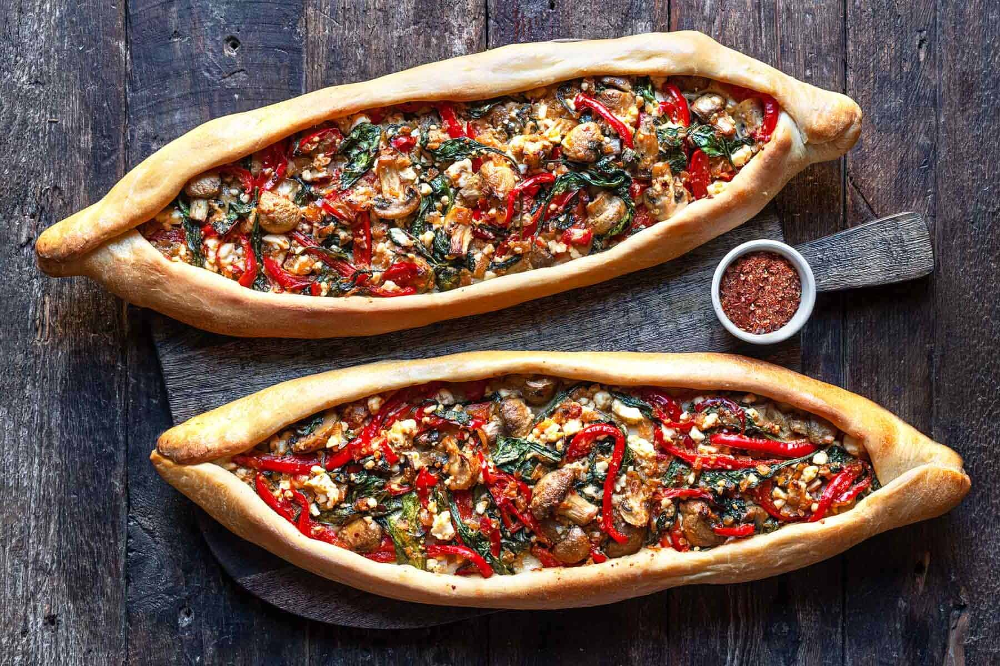

PIDE

INGREDIENTS
- 4 cups all-purpose flour
- 1 tsp salt
- 1 tsp sugar
- 1 tsp instant yeast
- 1/4 cup olive oil
- 1 cup warm water
- 1 egg, lightly beaten
- 1 lb ground lamb or beef
- 1 onion, finely chopped
- 2 medium tomatoes, chopped
- 1 red bell pepper, chopped
- 1/4 cup chopped fresh parsley
- 1/4 cup chopped fresh mint
- Salt and black pepper to taste
- 1 tbsp red pepper flakes
- 1 tbsp sumac (optional)
INSTRUCTIONS
- In a large mixing bowl, combine the flour, salt, sugar, and instant yeast. Mix well.
- Add the olive oil and warm water to the bowl and mix until a dough forms.
- Knead the dough on a floured surface for 10-12 minutes until it becomes smooth and elastic.
- Place the dough in a greased bowl, cover it with a damp cloth, and let it rise for 1 hour in a warm, draft-free place.
- Preheat the oven to 450°F (230°C).
- In a separate mixing bowl, combine the ground lamb or beef, chopped onion, chopped tomatoes, chopped red
bell pepper, chopped parsley and mint, salt, black pepper, red pepper flakes, and sumac. Mix well until all
ingredients are fully combined.
- Divide the dough into 4 equal pieces and roll each piece into an oval shape, about 10 inches long and 6 inches wide.
- Spread a thin layer of the meat mixture over each piece of dough, leaving a small border around the edges.
- Fold the edges of the dough over the filling to create a boat shape.
- Brush the edges of the pide with the beaten egg.
- Bake the pide in the preheated oven for 15-20 minutes, or until the crust is golden brown and crispy.
- Remove the pide from the oven and serve hot.
- Enjoy your delicious Turkish Pide!